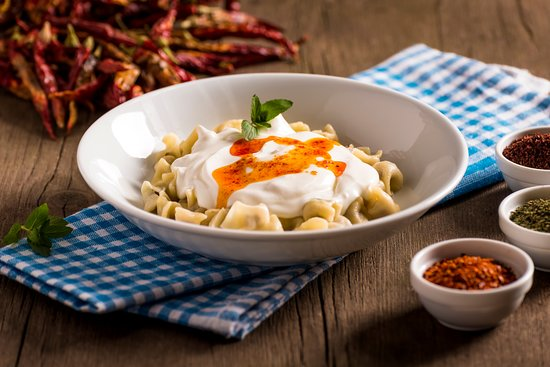

Turkish Type Ravioli

Description
This is one of the oldest dishes of Turkish Cuisine which originated from a far away place in Central Asia. It is favored and well-known among the Turks all over the world. In the original recipes mantıs are prepared in tiny froms. These tiny mantıs are simmered in water into which tomato paste is added. It is called "Çöçöre" by Central Asian Turks. It is time consuming to prepare and yet it tasty and delicious. The dish is served as a one course meal. When mantis are simmered, they are sometimes left in liquid. Yogurt-garlic mixture is blended into it. It is served with tomato sauce again. In winter months melted butter-red pepper mixture is sprinkled over.When mantıs are drained, leftover liquid is used in making soups. In Bolu province crushed walnuts-hard cheese mixture is sprinkled over. In some recipes 2-3 tabespoons of tomato paste is added to the boiling water before mantıs are stirred in. This dish is called "Tatar Böregi" in some regions which means "Tatar's Börek". The baked from is called mantı. Before stirring in boiling water mantıs can be baked in a moderate oven until golden brown. Then hot broth is poured over, and simmered until tender. Served with yogurt and tomato sauce.
Ingredients
- All-purpose flour (5 cups ~ 550 g)
- Salt (2 teaspoons ~ 12 g)
- Eggs (2 medium size ~ 100 g)
- Water (1/2 cup ~ 120 g)
- Ground meat (1 1/4 cups ~ 250 g)
- Onions (2 small size ~ 100g)
- Parsley (1/3 bunch ~ 20 g)
- Salt (1 teaspoon ~ 6 g)
- Black pepper (1/2 teaspoon ~ 1 g)
- Water (8 cups (2qt) ~ 2 lt)
- Salt (1 tablespoon ~ 18 g)
- Tomato (1 large size ~ 200 g)
- Butter or margarine (1/4 cup ~ 60 g)
- Red pepper (1/2 teaspoon ~ 1 g)
- Yogurt (2 2/3 cups ~ 660 g)
- Garlic (6 cloves ~ 18 g)
Steps
- Sift flour in a large bowl, reserving 1/3 cup
- Add salt; mix well
- Make a hole in center
- Blend in eggs and water gradually mixing thoroughly
- Knead for 7-8 minutes to make a smooth, medium stiff dough
- Divide into 3 portions.
- Shape into balls.
- Cover with a damp napkin and let stand for 10 minutes.
- For filling: Combine ground meat, minced onions and parsley.
- Season with salt and pepper; mix well and set aside.
- Roll first ball out into 1 mm thick circle sprinkling with flour
- Cut into 2 1/2 (1 inch) squares
- Place 1/2 teaspoon of filling in centre of each square
- Bring four corners together sealing and pressing well like a tiny bundle (or fold one corner of square over filling to join opposite corner shaping into triangle. Seal well pressing edges together.)
- Place on lightly floured baking pan
- Repeat same with remaining balls and filling
- Place water in a large saucepan
- Add salt; stir
- Bring to boil
- Stir in mantıs, mixing gently and thoroughly
- Reduce heat
- Simmer uncovered for 15-20 minutes or until tender but firm stirring gently and occasionally
- Combine minced tomato and melted butter in a saucepan
- Simmer for 5 minutes
- Stir in red pepper; keep warm
- Combine yogurt and minced garlic; mix well
- Remove mantis from liquid into a serving bowl with a slotted spoon
- Pour yogurt-garlic mixture over. Sprinkle with tomato sauce
- Serve hot